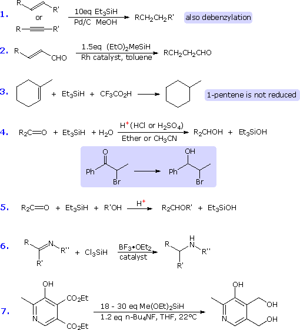
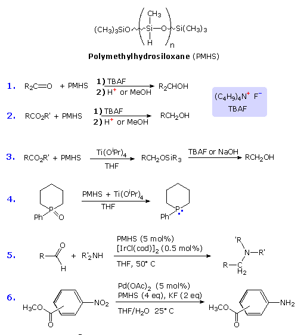
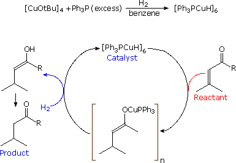
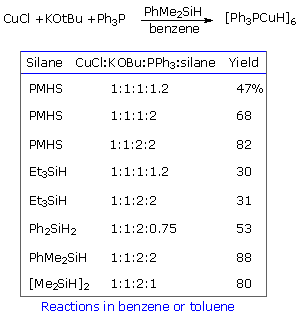
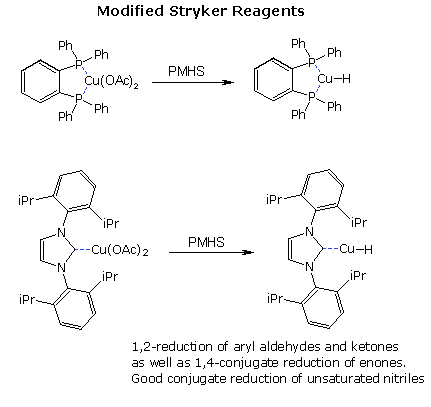
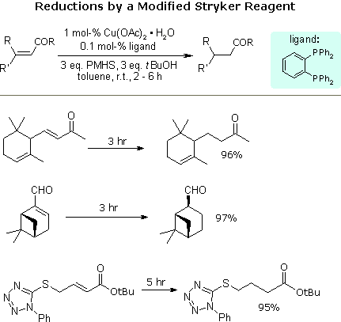
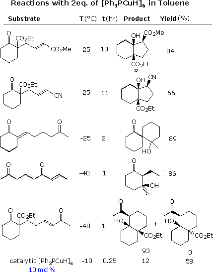
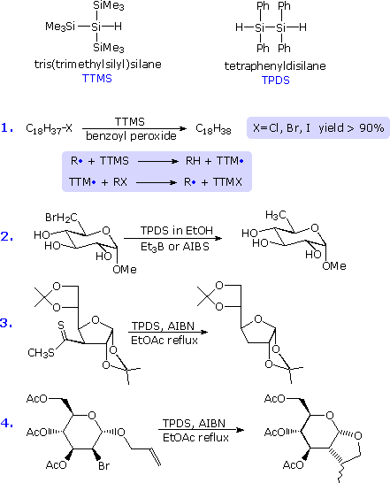

Many commonly used reducing agents are reactive complex metal hydrides that are soluble in organic solvents. These include sodium borohydride (NaBH4), lithium aluminum hydride (LiAlBH4) and diisobutylaluminium hydride (i-Bu2AlH). Related reagents, having a variety of organic ligands on the hydride carrier atom are also in common use. Most simple metal hydrides (e.g. LiH, NaH, & KH) are not good reducing agents due to their insolubility in organic solvents, although they may serve as heterogeneous strong bases.
The useful reducing properties of diborane (B6H6) are due to its monomer borane (BH3). Organoboranes such as disiamylborane and 9-borabicyclo[3.3.1]nonane are derivatives of borane having modified reactivity. Since silicon has a similar electronegativity (1.90) and ionization potential (8.15 eV) to boron (2.04 and 8.30 eV respectively), it is reasonable to anticipate that suitable derivatives of the pyrophoric gas silane (SiH4) might serve as useful reducing reagents for organic functional groups. Indeed, a variety of silane derivatives have proven effective, not only as hydride donors, but also as hydrogen atom transfer agents in radical reactions. Some of the silanes that have been employed in this fashion are: triethylsilane, phenylsilane, diphenylsilane, diphenylchlorosilane, trichlorosilane, tetraphenyldisilane and tris(trimethylsilyl)silane, (Me3Si)3SiH. The following diagram presents examples of three fundamentally different procedures for employing silanes as reducing agents.

In contrast to most of the silane reagents described above, polymethylhydrosilane (PMHS) is a relatively inexpensive, non-toxic, air and moisture stable liquid that has proven to be an effective hydride reducing agent for many common functional groups. The formula of PMHS is drawn at the top of the following diagram, followed by several examples of its use.

The copper(I) hydride complex, known as Stryker's reagent, is a [Ph3PCuH]6 hexameric cluster that serves as a conjugate reducing agent for α, β-unsaturated carbonyl compounds and nitriles. Unactivated carbon-carbon double bonds are not reduced. Stryker reagent may be used stoichiometrically or catalytically, as shown in the right hand diagram below. By using silanes as sources of hydride, as shown on the left below, the reductions becomes homogeneous and are faster.


The Stryker reagent is air sensitive, and by using bidentate ligands or hindered nucleophilic carbene ligands, such as 1,3-bis(2,6-diisopropylphenyl)-imidazol-2-ylidene), relatively stable Cu(II) precursors to Stryker-like Cu(I) hydrides are easily prepared. Two such reagent systems are shown on the left below, and examples of their use are drawn on the right. Note that unactivated double bonds and sulfide bonds are unaffected.


Since these reductions proceed to an intermediate Cu(I) enolate, the possibility of effecting an intramolecular aldol reaction subsequent to reduction offered an attractive variant. Five examples of this reaction sequence, using a stoichiometric (or larger) amount of reagent, are displayed in the following diagram. A sixth example at the bottom demonstrates that a catalytic version of the tandem reaction is possible.

Clicking on this diagram will display additional examples of this useful synthetic reaction sequence. PMHS has also proven to be useful for converting organotin oxides to their equivalent hydrides, which serve as important hydrogen transfer reagents.
In addition to their function as hydride donor reagents, silanes may also serve as radical H-donors. In this role they can substitute for the toxic reagent, tri-n-butyltin hydride, which generates difficult to separate nonpolar byproducts such as bis(tributyltin) oxide. The most useful silanes in this respect are tris(trimethylsilyl)silane (TTMS) and tetraphenyldisilane (TPDS), structures for which are shown below. Hydrogen transfer agents in radical reactions need a low M-H bond dissociation energy. Compared with the Sn-H dissociation energy of Bu3SnH (74 kcal/mol), the Si-H dissociation energy of TTMS is 79.0 kcal/mol, which together with that of TPDS is significantly lower than that of Et3Si-H (90.1 kcal/mol). Some examples of reactions in which these silanes have been used in this way are presented in the following diagram. These examples parallel the use of tri-n-butyltin hydride in a variety of radical substitution reactions.

The first two equations illustrate the reduction of a halogen substituent by the radical chain mechanism shown in the shaded box. The third equation demonstrates the effectiveness of these silanes in the Barton-McCombie deoxygenation reaction; and the last equation shows a radical cyclization in which TPDS proved to give higher yields of the cyclization product than did tributyltin hydride.